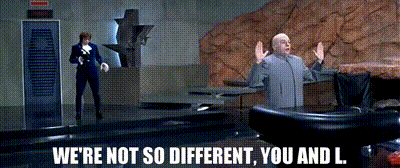

| Loan ID | Debt Coverage Ratio | Credit Score | Industry Outlook | Outcome |
|---|---|---|---|---|
| 1001 | 1.334 | 711 | Fair | Paid in Full |
| 1002 | 1.163 | 760 | Poor | Default |
| 1003 | 1.858 | 740 | Excellent | Paid in Full |
| 1004 | 0.767 | 724 | Poor | Paid in Full |
| 1005 | 1.346 | 712 | Above Average | Default |
| 1006 | 1.966 | 697 | Excellent | Paid in Full |
| 1007 | 1.502 | 671 | Excellent | Default |
| 1008 | 1.117 | 743 | Fair | Paid in Full |
One of the caveats of working with your traditional vanilla machine learning algorithms (e.g., linear regression, logistic regression, decision trees, etc.) is that each case (row) in your training dataset must be independent. Let’s explore what exactly this means.
The way those algorithms learn is by looking at a bunch of cases: the circumstances surrounding each case, and what the outcome was for each case. The algorithm then tries to boil all of these cases down to a handful of rules that do a pretty good job at explaining how certain circumstances generally lead to particular outcomes.
Applications in Credit Risk
When we think about credit risk models, the cases are perhaps a bunch of historical loans in your portfolio where we know what the outcome was. To provide a simplified example, let’s suppose we are building a logistic regression model where the possible outcomes are (1) the loan was paid back in full or, (2) the borrower defaulted on the loan.
In order to create the above dataset to train our model, we had to aggregate each loan into a single observation, so that each row represents a unique loan. Remember, each case in our training data must be independent; for us this means that we cannot have any loan appear more than once. There are many approaches to doing this aggregation which we won’t cover today, but for now just remember that the approach taken should be driven by what information will be available at the time of scoring a new loan.
Aggregation is Limiting
When we take the step of aggregating our data into unique loan-level observations, we are naturally reducing the amount of data we have to work with. If you have tons of data, this isn’t an issue. But one issue we run into often is severe class imbalance in our outcome. In other words, we tend to have a lot more “Paid in Full” cases than we have “Default” cases.
“Remember, each case in our training data must be independent; for us this means that we cannot have any loan appear more than once.”
But what if we didn’t have to satisfy that independence assumption? What if we didn’t have to aggregate our data? After all, the original data in our database probably looks a lot more like this:
| Loan ID | Date | Debt Coverage Ratio | Credit Score | Industry Outlook | Status |
|---|---|---|---|---|---|
| 1001 | 2021-06-01 | 1.925 | 749 | Excellent | Current |
| 1001 | 2021-07-01 | 1.674 | 705 | Good | Current |
| 1001 | 2021-08-01 | 1.334 | 711 | Fair | Paid in Full |
| 1002 | 2021-02-01 | 1.199 | 764 | Good | Current |
| 1002 | 2021-03-01 | 1.163 | 760 | Poor | Default |
| 1003 | 2021-09-01 | 0.644 | 800 | Above Average | Current |
| 1003 | 2021-10-01 | 2.654 | 728 | Good | Current |
| 1003 | 2021-11-01 | 1.858 | 740 | Excellent | Paid in Full |
This type of data is sometimes referred to as “longitudinal” data, and represents observations of the same subject(s) over multiple points in time. In our case, the “subjects” are the unique loans. Clearly, the rows in this type of dataset are not independent, since we see the same loan appear more than once.
What’s to be Gained
Suppose the independence condition didn’t exist, and we could use this longitudinal data to build our logistic regression model. What would we gain by doing so?
- More Data: For starters, we would have a lot more data! In situations where we don’t have a ton of data to begin with, each row of data we do have is really important. Especially when we have class imbalance in our data – we need as much information about “Default” loans as possible to help our model develop those general rules (and avoid overfitting).
- More Signal: Second, we can give our model insight into a loan’s history in a way that we weren’t able to with our aggregated dataset. For example, it’s probably important to distinguish between a loan that defaulted after being on the books for 3 years versus one that defaulted after 3 months. You can think of this as incorporating an entire additional predictor variable into our model.
Enter: Multi-Level Models
Luckily for us data scientists, we know that we have a lot more tools in our toolbox than just the three algorithms mentioned at the beginning of this article. One suite of lesser-known algorithms we might explore are multi-level models.
If you haven’t heard of multi-level models, you may be familiar with “mixed effects” or “hierarchical” models. These three terms all refer to roughly the same thing. The big advantage of this type of model? Each case in your training data does not have to be independent. This means that we can use a dataset that looks a lot more like the second table above, as opposed to the (aggregated) first table.
Analogous Algorithms
Fortunately for us, a lot of the more traditional algorithms have multi-level analogs.

In fact, there are multi-level and mixed effects flavors of logistic regression that allow you to accommodate dependence between rows in your training data.
In our next blog post, we will dive deeper into the technical approaches to implementing these kinds of algorithms for building better credit risk models.
Interested in Learning More?
Get in touch with us today at info@ketchbrookanalytics.com